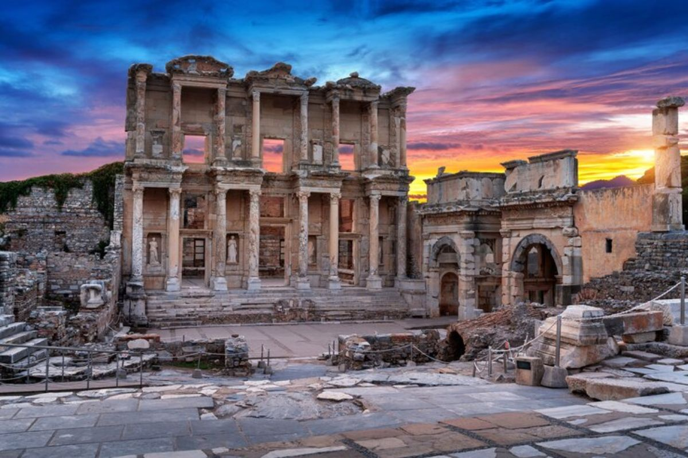

A Turquia é um país de encontros — entre continentes, culturas e épocas. Em suas ruas, ecos do passado convivem com a energia do presente, enquanto mesquitas, mercados e paisagens naturais revelam uma identidade moldada por séculos de transformações.
Entre o Oriente e o Ocidente, a Turquia constrói uma cultura própria, marcada por contrastes, tradições vivas e uma profunda conexão com sua história.
Deslize e conheça mais sobre o país.
A região da atual Turquia foi berço de algumas das civilizações mais antigas da humanidade, incluindo hititas, gregos e romanos. Sua posição estratégica sempre a tornou um ponto central de disputas e intercâmbios culturais.
Com a ascensão do Império Bizantino, Constantinopla tornou-se um dos centros mais importantes do mundo antigo. Em 1453, a cidade foi conquistada pelos otomanos, marcando o início de uma nova era sob o Império Otomano.
Durante séculos, o Império Otomano foi uma potência global, conectando territórios da Europa, Ásia e África. Sua influência moldou profundamente a cultura, a política e a religião da região.
Após o colapso do império no início do século XX, a Turquia moderna foi fundada em 1923 sob a liderança de Mustafa Kemal Atatürk, que promoveu reformas profundas, transformando o país em um Estado laico e nacional.

A Turquia é um dos principais destinos turísticos do mundo, atraindo milhões de visitantes por suas paisagens únicas e patrimônio histórico, com destaque para Capadócia e suas formações rochosas e voos de balão.
O país é reconhecido por seu patrimônio histórico, com cidades como Istambul preservando monumentos de diferentes eras e impérios.
Sua infraestrutura de transporte aéreo ganhou destaque internacional, com Turkish Airlines conectando dezenas de países a partir de um dos maiores hubs do mundo.
O país ocupa uma posição geográfica única, conectando Europa e Ásia, sendo um ponto estratégico para comércio, energia e relações internacionais.
O chá (çay) é mais consumido que o café e faz parte essencial das interações sociais, servido ao longo do dia em pequenos copos de vidro.
Os famosos “olhos gregos” (amuletos contra mau-olhado), conhecidos como nazar, estão presentes em casas, lojas e até veículos, refletindo crenças populares que atravessam gerações.
Antes do casamento, a noiva turca costuma usar uma fita vermelha na cintura, símbolo de pureza, proteção e boa sorte. O gesto, geralmente feito por um familiar, marca de forma simples e simbólica o início de uma nova etapa da vida.
O café turco é preparado de forma tradicional em um recipiente chamado cezve, e seu preparo é considerado patrimônio cultural imaterial pela UNESCO.